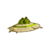
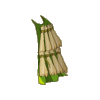
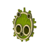
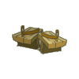
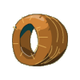
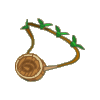
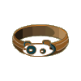
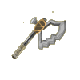

Menu barbok'you

| Niveau 75 | Chapeau Terrdala | ||
|---|---|---|---|
| Recettes : | Caractéristiques : | Conditions : | |
|  | 50 Artefact pandawushu terre 10 Poils de pandule 8 Poils de pandikaze 5 Peau de kitsou nere 4 Poils de kitsou nere 1 Aigue-Marine |
+21 à 30 force +31 à 50 vitalité +21 à 35 sagesse +1 portée +4 à 5 prospection +4 à 5 résistance feu +4 à 5 résistance air |
aucune |
| Remarques : | |||
| Niveau 63 | Cape Terrdala | ||
|---|---|---|---|
| Recettes : | Caractéristiques : | Conditions : | |
|  | 50 Artefact pandawushu terre 15 Feuille de bulbuisson 8 Poils de pandule 5 Poils sanglier 5 Poils pandikaze 1 Etoffe de pandule |
+16 à 25 force +31 à 50 vitalité +6 à 10 dommages aux piéges +151 à 200 initiative +6 à 7 résistance eau +6 à 7 résistance terre |
aucune |
| Remarques : | |||
| Niveau 1 | Bouclier Terrdala | ||
|---|---|---|---|
| Recettes : | Caractéristiques : | Conditions : | |
|  | 50 Artefact pandawushu terre 10 Erable 6 Argent 3 Bambou magique 2 Carapace de scara vert 1 Etoffe de soryo firefoux |
15 à 18% rés. terre aux combattants +8 à 10 rés. eau aux combattants |
grade > 3 |
| Remarques : | |||
| Se drop sur n'importe quel monstre de Pandala Terre | |||
| Niveau 76 | Geta Terrdala | ||
|---|---|---|---|
| Recettes : | Caractéristiques : | Conditions : | |
|  | 50 Artefact Pandawashu terre 15 Peau de cooleuvre 15 Bambou sombre 10 Peau kitsou nere 1 Peau de pandule 1 Bambou doré |
+1 PM +26 à 40 force +26 à 35 vitalité 4 à 5% résistance feu 4 à 5% résistance air |
aucune |
| Remarques : | |||
| Niveau 77 | Alliance Terrdala | ||
|---|---|---|---|
| Recettes : | Caractéristiques : | Conditions : | |
|  | 50 Artefact pandawushu terre 5 Bois de bambou 1 Topaze 5 Bambou sombre 2 Kouartz 2 Aluminite |
+30 à 31 vitalité +22 à 25 sagesse +3 dommages 4 à 5% résistance eau 4 à 5% résistance terre |
aucune |
| Remarques : | |||
| Niveau 80 | Amulette Terrdala | ||
|---|---|---|---|
| Recettes : | Caractéristiques : | Conditions : | |
|  | 50 Artefact pandawushu terre 10 Bombu sombre 4 Aluminite 3 Diamant 3 Pyruthe 1 Agathe 1 Ecorce magique de bulbambou |
+1 PA +31 à 50 vitalité +11 à 18 sagesse 4 à 5% résistance air 4 à 5% résistance eau |
aucune |
| Remarques : | |||
| Niveau 49 | Ceinture Terrdala | ||
|---|---|---|---|
| Recettes : | Caractéristiques : | Conditions : | |
|  | 50 Artefact pandawashu terre 2 Peau de kitsou nere 5 Peau de pandikaze 1 Poil kitsou nere 2 Peau de cooleuvre |
+22 à 36 force +3 à 4 CC +1 créature invocable +318 à 400 pods +11 à 15% dommages aux piéges |
aucune |
| Remarques : | |||
| Niveau 83 | Hache Terrdala | |||
|---|---|---|---|---|
| Recettes : | Effets : | Caractéristiques : | Conditions : | |
|  | 50 Artefact pandawashu terre 20 Bambou 15 Bambou sombre 2 Rutile 2 Pyrute 1 Bois de bambou dorée 1 Agathe |
Dom : 11 à 35 (terre) Vole : 3 à 4 PDV (feu)) +31 à 50 vitalité +26 à 40 force +3 à 4 CC +16 à 20% dommages +4 à 5% résistance neutre |
PA : 6 Portée : 1 à 1 Bonus CC : +5 Critique : 1/50 Echec : 1/50 |
|
| Remarques : | ||||
| La hache Terrdala fait partie de la panoplie terrdala | ||||
| 1 Items | Aucun bonus |
|---|---|
| 2 Items | +10 Vitalité |
| 3 Items | +20 Vitalité / +2 Dommages |
| 4 Items | +40 Vitalité / +10 force / +4 Dommages |
| 5 Items | +60 Vitalité / +20 force / +6 Dommages |
| 6 Items | +100 Vitalité / +40 force / +8 Dommages / 5% Résistance neutre |
| 7 Items | +150 Vitalité / +60 force / +10 Dommages / 10% Résistance neutre |
| 8 Items | +250 Vitalité / +80 force / +12 Dommages / 20% Résistance neutre / +1 PA |
Dofus est un MMORPG édité par Ankama." Barbok " est un site non-officiel sans aucun lien avec Ankama.
Toutes les illustrations sont la propriété d'Ankama Studio et de Dofus. Le contenu de ce site a été rédigé initialement par Immortal, il ne s'agit que d'une remise en ligne effectuée par Eternal Games.